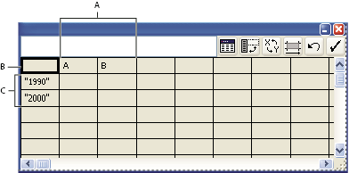
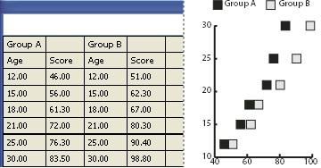
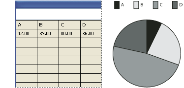
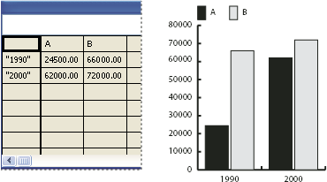

Use graph labels and data sets
Labels are words or numbers that describe two things: the sets of data you want to compare, and the categories across which you want to compare them. For column, stacked column, bar, stacked bar, line, area, and radar graphs, you enter labels in the worksheet as follows:

- A.
- Data set labels
- B.
- Blank cell
- C.
- Category labels
 Enter labels
Enter labels
 For column, stacked column, bar,
stacked bar, line, area, and radar graphs, enter labels in the worksheet
as follows:
For column, stacked column, bar,
stacked bar, line, area, and radar graphs, enter labels in the worksheet
as follows:-
If you want Illustrator to generate a legend for the graph, delete the contents of the upper‑left cell and leave the cell blank.
-
Enter labels for the different sets of data in the top row of cells. These labels will appear in the legend. If you don’t want Illustrator to generate a legend, don’t enter data‑set labels.
-
Enter labels for the categories in the left column of cells. Categories are often units of time, such as days, months, or years. These labels appear along either the horizontal axis or vertical axis of the graph, with the exception of radar graphs, for which each label results in a separate axis.
-
To create labels consisting only of numbers, enclose the numbers in straight quotation marks. For example, to use the year 1996 as a label, enter "1996".
-
To create line breaks in labels, use the vertical bar key to separate lines. For example, type Total|subscriptions|1996 to produce the following graph label:
Total
subscriptions
1996
Enter data sets for scatter graphs
A scatter graph differs from the other kinds of graphs in that both axes measure values; there are no categories.

- Enter data‑set labels in every other cell along the top row of the worksheet, starting with the first cell. These labels will appear in the legend.
- Enter y‑axis data in the first column and x‑axis data in the second column.
Enter data sets for pie graphs
You organize data sets for pie graphs similarly to other graphs. However, each row of data in the worksheet generates a separate graph.

- Enter data‑set labels as for column, stacked column, bar, stacked bar, line, area, and radar graphs. Enter category labels if you want to generate graph names.
- To create a single pie graph, plot only one row of data, either all positive or all negative values.
- To create multiple pie graphs, plot additional rows of data, either all positive or all negative values. By default, the size of the individual pie graphs is proportional to the total of each graph’s data.
Enter data sets for column, bar, line, area, and radar graphs
After you enter the labels for your graph, you’re ready to enter each set of data under the appropriate column.

- Column, stacked column, bar, stacked bar graphs
- The height of the column or length of the bar corresponds to the amount being compared. For column or bar graphs, you can combine positive and negative values; negative values appear as columns extending below the horizontal axis. For stacked column graphs, numbers must be all positive or all negative.
- Line graphs
- Each column of data corresponds to one line in the line graph. You can combine positive and negative values in a line graph.
- Area graphs
- Values must be all positive or all negative. Each row of data entered corresponds to a filled area on the area graph. Area graphs add each column’s values to the previous column’s totals. Therefore, even if area graphs and line graphs contain the same data, they appear substantially different.
- Radar graphs
- Each number is plotted on an axis and connected to the others in the same axis to create a “web.” You can combine positive and negative values in a radar graph.